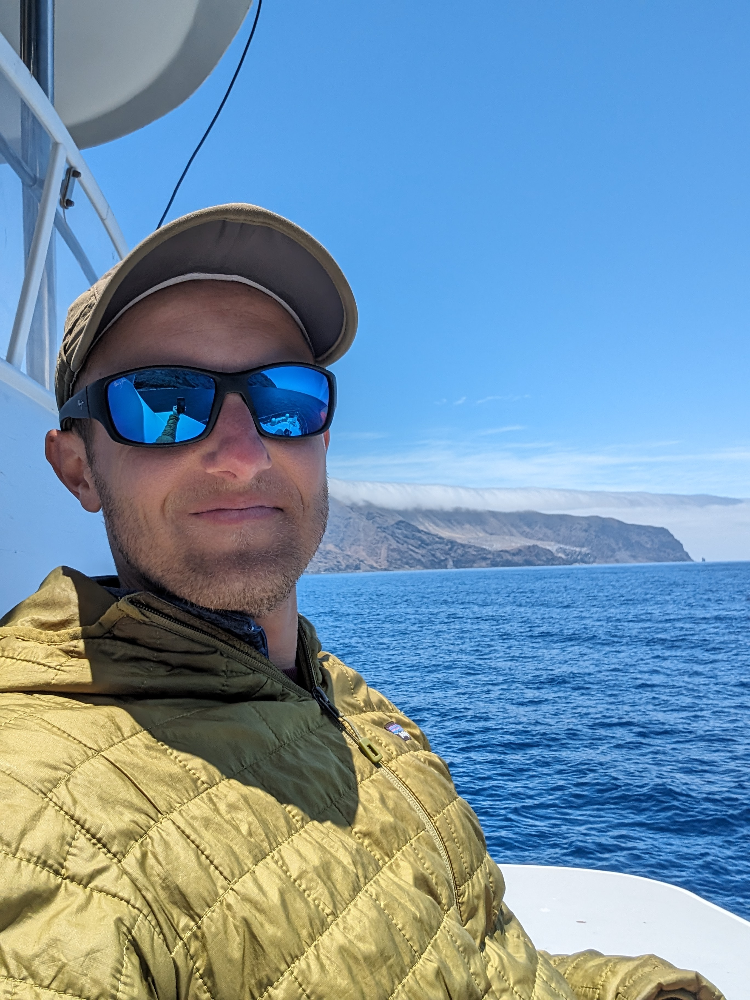

David A. Sweeney
PhD Student in Statistics · University of St Andrews
Affiliated Researcher · Foundation for Marine Ecology and Telemetry Research (MarEcoTel)
I develop statistical and modelling tools to understand the behaviour, ecology, and population consequences of disturbance in deep-diving cetaceans, with a focus on goose-beaked whales in the Southern California Bight and beyond.
Research interests: marine mammal ecology · mark-recapture · animal movement · population consequences of disturbance · Bayesian modelling
✉️ ds344 [at] st-andrews [dot] ac [dot] uk · dsweeney [at] marecotel [dot] org
